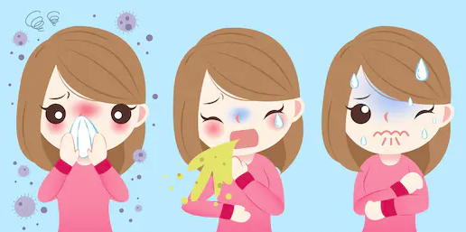

Social Distancing Guidelines
Keeping 1.5 metres away from others wherever possible. This is approximately 2 large steps or 2 arms length.
If you and the person next to you extend your arm and you can touch their hand, you’re too close!

Avoiding physical greetings such as handshakes, hugs, or kisses. Smile and wave instead!

If you or your parents pay for something, try to pay with card instead of cash. This prevents germs on money from being spread.

Avoid crowds, if you see a crowded space, don’t enter. This also applies to large public gatherings.

Stay at home if you have any cold or flu symptoms such as coughing, sneezing, or fever. Tell your parents as soon as you start feeling unwell!
